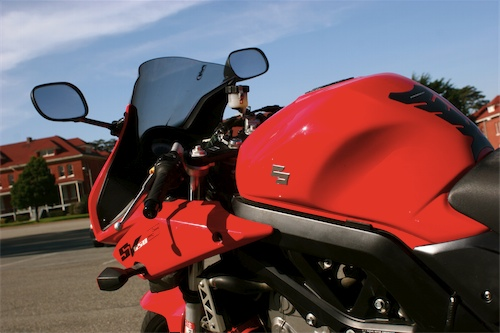

Chyrp, blogging engine
Light weight, highly customisable blogging engine.
Light weight, highly customisable blogging engine.
With a flatmate and a kitty now gone, my apartment is now bigger and emptier. And in just under two weeks my own kitty and I will be leaving this apartment, and San Francisco. After almost five years of living within the boundary of SF County, I'll be moving to the land of slightly cheaper rents. Alameda County.
A large one bedroom in Alameda itself. Apartment 101. The Ministry. I'm probably more excited about the flat number, than the flat itself...
With a change in living, I also have plans for changes here. A blog engine, some new features, and in my ideal world, much more new content. But the emphasis is definitely on new engine. WordPress is a pig, and everyone knows it -- most refrain from pointing it out.

With a flatmate and a kitty now gone, my apartment is now bigger and emptier. And in just under two weeks my own kitty and I will be leaving this apartment, and San Francisco. After almost five years of living within the boundary of SF County, I'll be moving to the land of slightly cheaper rents. Alameda County.
A large one bedroom in Alameda itself. Apartment 101. The Ministry. I'm probably more excited about the flat number, than the flat itself...
With a change in living, I also have plans for changes here. A blog engine, some new features, and in my ideal world, much more new content. But the emphasis is definitely on new engine. WordPress is a pig, and everyone knows it -- most refrain from pointing it out.